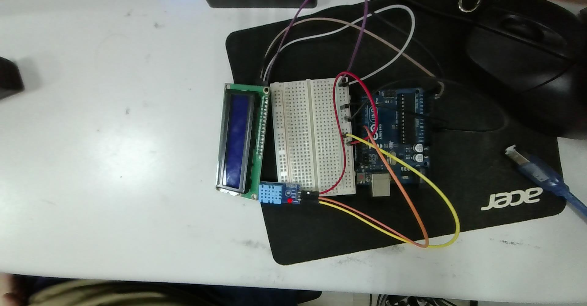
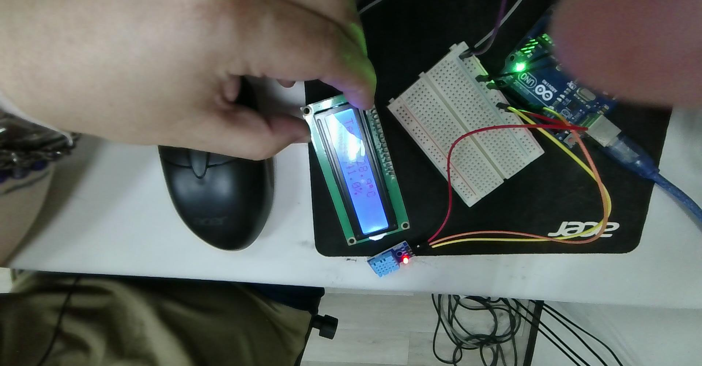

本專題以 Arduino Uno R3 微控制器為核心，結合 DHT11 數位溫濕度感測模組 與 I2C 介面 LCD 1602 液晶顯示模組，實現一套即時環境溫濕度監測與數值視覺化系統。
在嵌入式物聯網 (IoT) 與環境監控系統開發中，溫濕度數據為最基礎且常見的監測項目。本設計解決了傳統微控制器感測專案中的四大核心工程痛點：
Adafruit_Sensor 與 DHT_U 函式庫，自動讀取感測器硬體規格與最小取樣週期（sensor.min_delay）。以下為使用者實際拍攝之實體驗證電路圖（2026-10-15-135909.jpg），呈現 Arduino Uno、麵包板共用電源軌、LCD 1602 I2C 轉接板以及 DHT11 感測模組之整體拓撲：


Temp: 28.9°C 與 Humd: 41.0%，內建字模 (char)223 度數圓圈清晰呈現，系統運作完全正常！| 模組元件 | 模組引腳 | Arduino Uno / 麵包板目標 | 電氣特性與功能說明 | 實體導線顏色 (照片對照) |
|---|---|---|---|---|
| Arduino Uno | 5V | 麵包板正極電源軌 (Red Rail) | 系統主供電 (+5V DC) | 紅色跳線 (Red) |
| Arduino Uno | GND | 麵包板負極電源軌 (Blue/Black Rail) | 系統共用地線 (Common Ground) | 黑色/棕色跳線 |
| I2C LCD 1602 (PCF8574 背板) |
GND | 麵包板負極軌 (GND) | 模組電源地 | 黑色/灰色線 |
| VCC | 麵包板正極軌 (5V) | 模組供電 (+5V) | 白色/紫色線 | |
| SDA | Arduino 類比 Pin A4 (或頂部 SDA) | I2C 串列資料線 (Serial Data) | 白色跳線 (White) | |
| SCL | Arduino 類比 Pin A5 (或頂部 SCL) | I2C 串列時脈線 (Serial Clock) | 紫色跳線 (Purple) | |
| DHT11 模組 (3-Pin 模組版) |
VCC (`+`) | 麵包板正極軌 (5V) | 感測器工作電源 (3.3V ~ 5.5V) | 紅色跳線 (Red) |
| GND (`-`) | 麵包板負極軌 (GND) | 感測器接地端 | 橘色/棕色跳線 | |
| DATA (`OUT` / `S`) | Arduino 數位引腳 Pin 8 | 單匯流排雙向數位資料傳輸 | 黃色跳線 (Yellow) |
1015-dht11.ino 程式碼，明確定義 #define DHTPIN 8，黃色訊號線連接至 Arduino Uno 的 Pin 8 數位腳位。
模擬使用者 1015-dht11.ino 實測顯示效果（包含 Temp:、Humd:、(char)223 度數符號與尾端空白覆寫防殘留）：
I2C（Inter-Integrated Circuit）是半雙工、同步序列匯流排，僅依靠 SDA (資料) 與 SCL (時脈) 兩根線路實現多主多從通訊。
DHT11 與 DHT22 內部並非單純的類比感測探頭，而是一套高度整合的微型智慧感測系統，其內部運作涵蓋三大物理感測機制與數位訊號調理流程：
DHT11 採用高分子薄膜濕敏電阻作為感濕核心：
測溫採用過渡金屬氧化物（$\text{Mn}, \text{Co}, \text{Ni}$）高溫燒結而成的半導體陶瓷：
delayMS >= 1500？在使用者實測驗證的整合程式中，展現了兩項極具實用價值的專業技巧：
(char)223：
Hitachi HD44780 點陣控制器內建的字庫 ROM（A00 標準版）在字碼 223 (十六進制 0xDF) 定義了日文半形句點／圓圈符號。透過 lcd.print((char)223); 即可直接印出度數圓圈 °，無須占用額外 CGRAM 空間！
25.4°C）變為個位數（如 9.8°C）時，如果不做處理，原本位置最後方的舊字元會留在螢幕上。在數值後面補印空白（lcd.print("C "); 與 lcd.print("% ");），能確保完整覆寫舊字元，既乾淨俐落又無需呼叫劇烈閃爍的 lcd.clear()。
本專題完整記錄使用者從硬體接線、程式庫下載、獨立單元測試（1015.txt）到 AI 整合（1015-dht11.ino）的完整足跡：
確認 Arduino Uno、麵包板與感測模組間的線路連結：
開啟 Arduino IDE Library Manager（Ctrl + Shift + I），安裝下列兩組套件：
LiquidCrystal_I2C：控制 PCF8574 晶片驅動 LCD 1602。DHT sensor library（作者：Adafruit）：安裝時點選 「Install all」，一併補齊底層 Adafruit Unified Sensor 庫。利用 I2C Scanner 掃描硬體，驗證匯流排硬體連線，實測確認 LCD 位址為 0x27。
使用者在 1015.txt 中保留了分別驗證成功的兩個基礎範例：
// YWROBOT Compatible with the Arduino IDE 1.0
#include <Wire.h>
#include <LiquidCrystal_I2C.h>
LiquidCrystal_I2C lcd(0x27, 16, 2); // 設定 LCD 位址 0x27，16字元 2行
void setup() {
lcd.init(); // 初始化 lcd
lcd.init();
lcd.backlight(); // 開啟背光
lcd.setCursor(3, 0);
lcd.print("Hello, world!");
lcd.setCursor(2, 1);
lcd.print("Ywrobot Arduino!");
}
void loop() {
}// DHT Temperature & Humidity Sensor - Unified Sensor Library Example
#include <Adafruit_Sensor.h>
#include <DHT.h>
#include <DHT_U.h>
#define DHTPIN 8 // DHT 感測器接在數位 Pin 8
#define DHTTYPE DHT11 // 感測器型號 DHT11
DHT_Unified dht(DHTPIN, DHTTYPE);
uint32_t delayMS;
void setup() {
Serial.begin(9600);
dht.begin();
sensor_t sensor;
dht.temperature().getSensor(&sensor);
dht.humidity().getSensor(&sensor);
delayMS = sensor.min_delay / 1000; // 取得感測器規格最小延遲
}
void loop() {
delay(delayMS);
sensors_event_t event;
dht.temperature().getEvent(&event);
if (isnan(event.temperature)) {
Serial.println(F("Error reading temperature!"));
} else {
Serial.print(F("Temperature: "));
Serial.print(event.temperature);
Serial.println(F("°C"));
}
dht.humidity().getEvent(&event);
if (isnan(event.relative_humidity)) {
Serial.println(F("Error reading humidity!"));
} else {
Serial.print(F("Humidity: "));
Serial.print(event.relative_humidity);
Serial.println(F("%"));
}
}將上述兩個經硬體驗證通過的範例交由 AI 協助整合，產出最終實體驗證程式碼：
sensor.min_delay / 1000 後，自動檢查 if (delayMS < 1500) delayMS = 1500;，保護感測元件避免頻繁讀取失真。(char)223，免除 CGRAM 佔用。"C "、"% "）防止數值縮短時殘留舊字元。
#include <Wire.h>
#include <LiquidCrystal_I2C.h>
#include <Adafruit_Sensor.h>
#include <DHT.h>
#include <DHT_U.h>
// --- 硬體腳位與設定 ---
#define DHTPIN 8 // DHT 感測器接在數位腳位 8
#define DHTTYPE DHT11 // 感測器型號 DHT11
// 設定 LCD：位址通常為 0x27，規格為 16 字元、2 行
LiquidCrystal_I2C lcd(0x27, 16, 2);
DHT_Unified dht(DHTPIN, DHTTYPE);
uint32_t delayMS;
void setup() {
Serial.begin(9600);
// 初始化 LCD 螢幕與背光
lcd.init();
lcd.backlight();
lcd.clear();
// 初始化 DHT 感測器
dht.begin();
// 取得 DHT 感測器所需的最小讀取間隔時間（DHT11 通常至少需 1~2 秒）
sensor_t sensor;
dht.temperature().getSensor(&sensor);
delayMS = sensor.min_delay / 1000;
if (delayMS < 1500) {
delayMS = 1500; // DHT11 建議間隔至少 1.5 秒以上較為穩定
}
// 開機提示畫面
lcd.setCursor(0, 0);
lcd.print("Initializing...");
delay(1000);
lcd.clear();
}
void loop() {
// 等待感測器間隔
delay(delayMS);
sensors_event_t event;
// --- 讀取並顯示溫度（第 1 行）---
lcd.setCursor(0, 0);
lcd.print("Temp: ");
dht.temperature().getEvent(&event);
if (isnan(event.temperature)) {
lcd.print("Error ");
} else {
lcd.print(event.temperature, 1); // 顯示小數點後 1 位
lcd.print((char)223); // LCD 內建的度數符號 '°'
lcd.print("C "); // 後方補空格避免位數變短時殘留舊字
}
// --- 讀取並顯示濕度（第 2 行）---
lcd.setCursor(0, 1);
lcd.print("Humd: ");
dht.humidity().getEvent(&event);
if (isnan(event.relative_humidity)) {
lcd.print("Error ");
} else {
lcd.print(event.relative_humidity, 1); // 顯示小數點後 1 位
lcd.print("% ");
}
}| 量測規格 | DHT11 (經濟入門款) | DHT22 / AM2302 (高精度進階款) | 實務選型指標 |
|---|---|---|---|
| 溫度量測範圍 | $0^\circ\text{C} \sim 50^\circ\text{C}$ | $-40^\circ\text{C} \sim 80^\circ\text{C}$ | 零下結冰或高溫工業環境必選 DHT22 |
| 濕度量測範圍 | $20\% \sim 90\%\ \text{RH}$ | $0\% \sim 100\%\ \text{RH}$ | 超低濕或濃霧飽和環境 DHT11 會失真 |
| 溫度量測誤差 | $\pm 2.0^\circ\text{C}$ | $\pm 0.5^\circ\text{C}$ | 高精度恆溫控制推薦 DHT22 或 SHT31 |
| 濕度量測誤差 | $\pm 5\%\ \text{RH}$ | $\pm 2\%\ \text{RH}$ | DHT22 重複性與長期穩定性顯著較佳 |
| 數值小數解析度 | 整數精度 (小數常為 0) | 0.1 級解析度 (16-bit 浮點精度) | 需要捕捉細微趨勢變化選 DHT22 |
模型/Agent: Gemini 3.8 Flash / Antigravity
Prompt 原文:
C:\Users\User\Desktop\2026-10-15-135909.jpg 這是今天arduino接上lcd 1602 I2c與 dht11的線路圖，先記錄成筆記變更摘要: 依據使用者提供的實體電路接線圖照片（2026-10-15-135909.jpg），建立 Arduino Uno 整合 I2C LCD 1602 與 DHT11 溫濕度監控系統的完整專題筆記。
模型/Agent: Gemini 3.8 Flash / Antigravity
Prompt 原文:
我的實作步驟是 1.先根據硬體只是接線 2.尋找安裝程式庫 3.開啟範例進行基礎測試(硬體與通訊 基礎語法認識)4.分別依照上述方法測試螢幕與溫濕度 5.將測試成功的基礎範例讓AI協助我整合變更摘要: 導入使用者提出的標準五步驟工程實作法，新增程式庫安裝指引與獨立單元測試結構。
模型/Agent: Gemini 3.8 Flash / Antigravity
Prompt 原文:
C:\Users\User\Desktop\1015-dht11\1015-dht11.ino C:\Users\User\Desktop\1015.txt 這是我的測試程式與AI整合的程式碼變更摘要: 讀入使用者提供的實體單元測試來源程式碼（1015.txt）及經 AI 整合驗證之完整程式碼（1015-dht11.ino）。修正硬體引腳確認為 Pin 8，歸檔原始程式檔至 ec/ 目錄，深入剖析程式碼中的核心工程技術（Adafruit_Sensor.h / DHT_U.h 抽象架構、sensor.min_delay 動態延遲判定保護、HD44780 內建度數符號 (char)223 與尾部防字元殘留技巧），同步更新全站目錄索引。
模型/Agent: Gemini 3.8 Flash / Antigravity
Prompt 原文:
C:\Users\User\Desktop\2026-10-15-143912.jpg 完成圖變更摘要: 納入使用者實體電路通電運作之完整成果圖（2026-10-15-143912.jpg），記錄 LCD 實測即時顯示數據（Temp: 28.9°C / Humd: 41.0%），驗證字元對齊與度數符號顯示效果，並將 HTML 互動模擬器預設數值同步更新為實測值，更新全站索引目錄。
模型/Agent: Gemini 3.8 Flash / Antigravity
Prompt 原文:
加入dht感應器的運作原理變更摘要: 於核心概念剖析中深入擴充 DHT 感測器之完整底層物理運作機制：包含高分子電阻式濕敏元件水分子吸附解離導電機制（Grotthuss 質子傳遞）、NTC 負溫度係數熱敏電阻半導體載子激發原理與 Steinhart-Hart / $\beta$ 參數數學模型、內部 8-Bit 微控制器訊號調理與 OTP 出廠校準係數溫度補償、單匯流排 40-Bit 脈衝寬度調變時序，以及內部焦耳熱自我發熱（Self-Heating）與熱平衡取樣延遲限制之熱力學深度剖析。